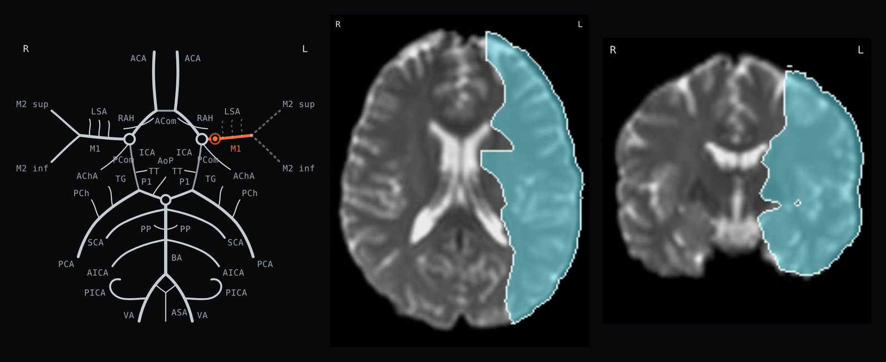
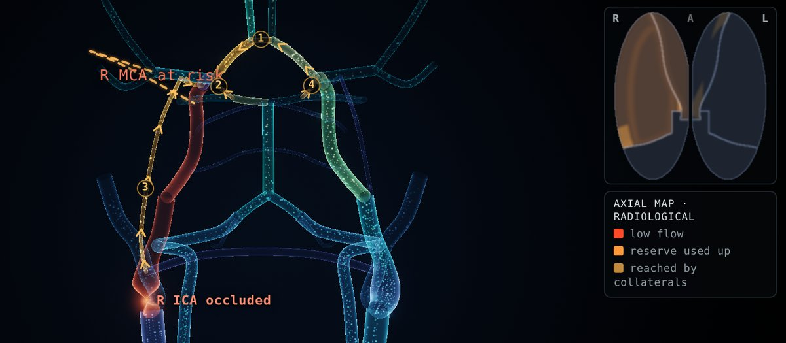
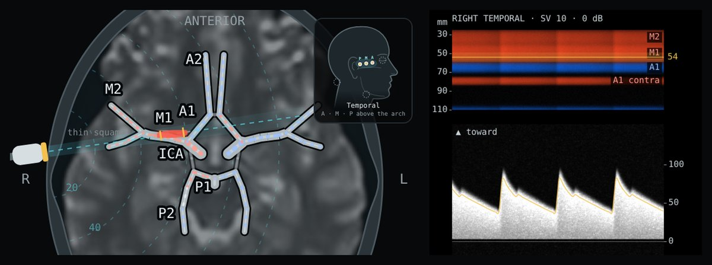

Interactive teaching models · neurology
Small, free tools for learning clinical neuroanatomy at the bedside and in the reading room. Each runs in the browser, with nothing to install.
Vessels, territories, flow and ultrasound

Occlude an artery on the Circle of Willis and its territory lights up on real MRI slices from a published 3D atlas of 1,298 stroke patients. Read the matching syndrome, or work backwards from the findings.

Blood flow from the aortic arch to the brain, computed from a physiological model and drawn like 4D flow MRI. Close a vessel and watch the collaterals take over.

Aim the probe, turn the depth and read the spectrum, from a model of the circle of Willis.